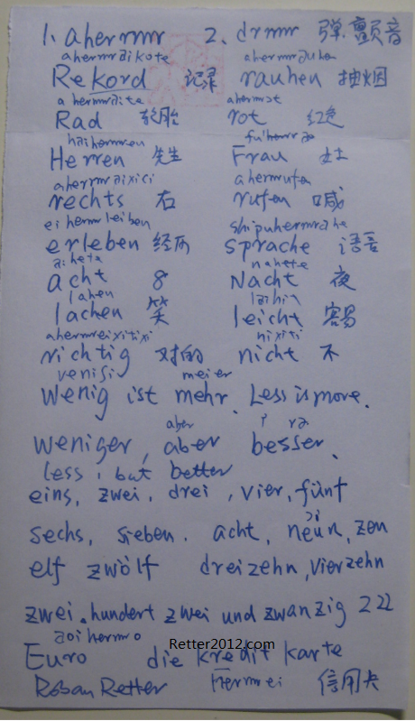

返回主页
弹舌音（颤音）

欧洲大陆多数语言都有弹舌音（颤音），英语和汉语没有。主要是derrrrrr和aherrrrr两种。学语言从数数开始比较容易。幼儿园是先学数数，我先学粤语数数。所以，日语德语都从数数开始。
文革期间，王沪宁没有下乡精通法语、万钢下乡搞定德语、刘亚洲参军学会英语。所以，要至少一门外语。最差也要像李嘉诚一样学点粤语吧？HongKong News Agora
上海交通大学的Borau来自德国西部Saar（靠近法国洛林，德法双语区），用英语和德语教学（Borau是英语文学Ph. D.）。完全用英语教授德语，可以完全忘记母语（汉语），效果很好。Borau不懂中文，采用Passswort Deutsch《周边德国》作为教材，全德语。当然，不要忘了都德的名著《最后一课》。笔者曾经碰到一个瑞士人（母亲为意大利人，父亲讲德语，本人会德语、法语、英语和意大利语）问她为什么法语区的人不学德语。答曰：讲法语的人懒！换句话，中国精英或211大学内懂得藏语、维吾尔语、阿拉伯语、蒙古语的人有几个？大不列颠当日不落帝国的时候，要求政府职员至少会一种当地语言的。晋商和十三行都会外语的，讲客户的语言是常识来的。
口腔肌肉的国际化后，21世纪的季风亚洲（Monsoon Asia）才会有中国的位置。
version:1.0; jobnet@188.com © retter2012.com